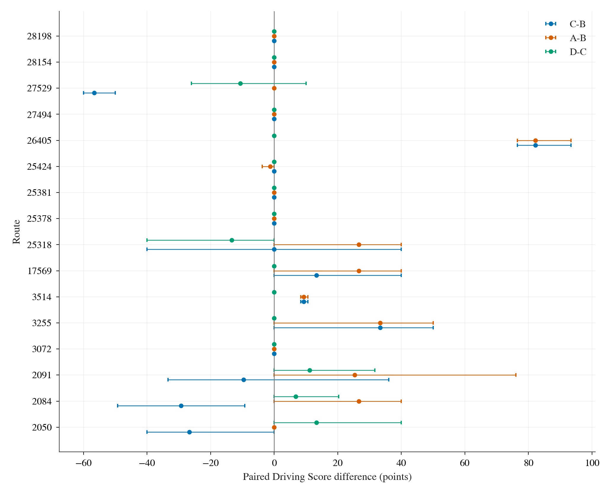
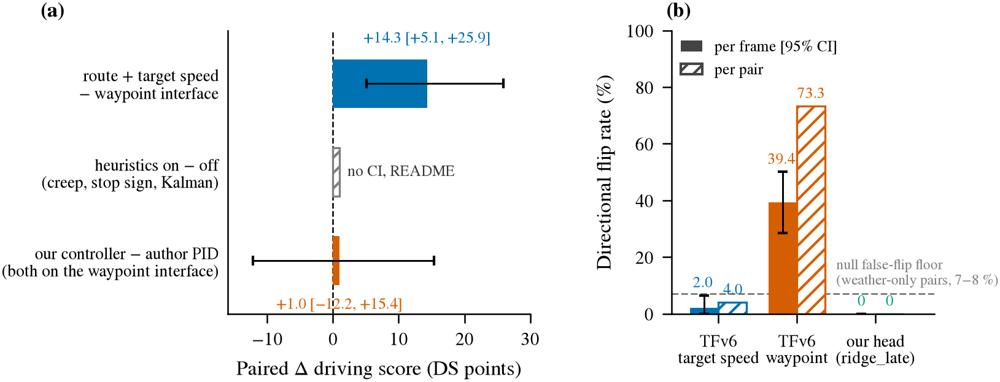
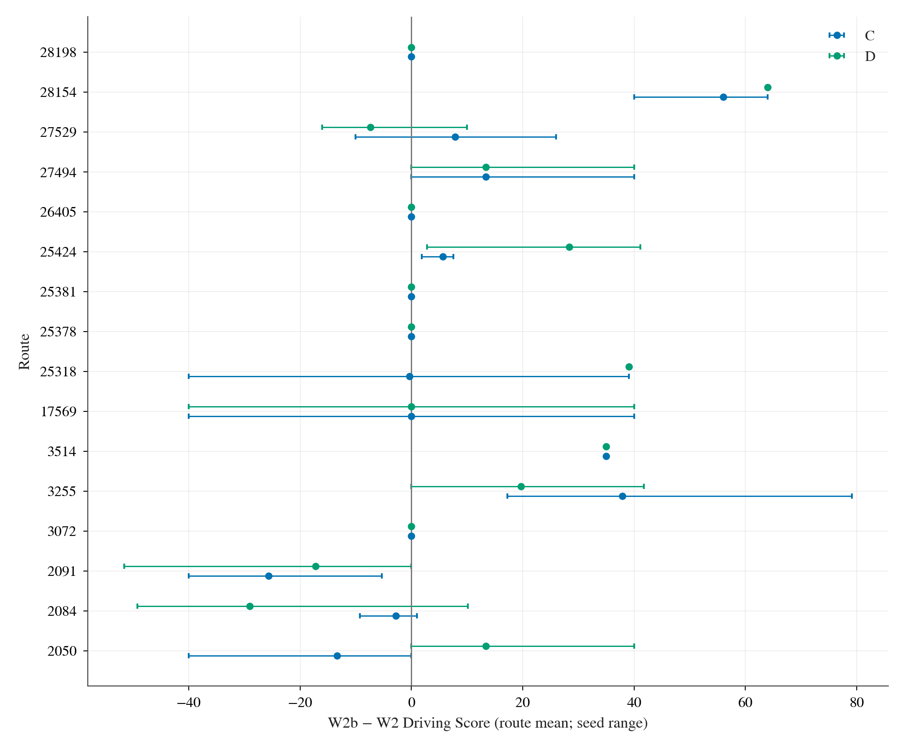
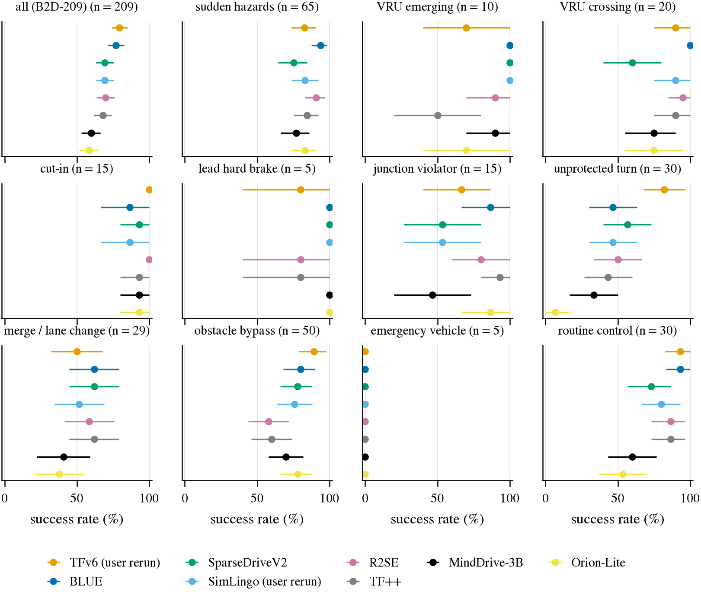
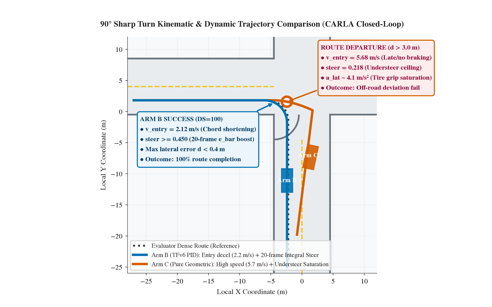
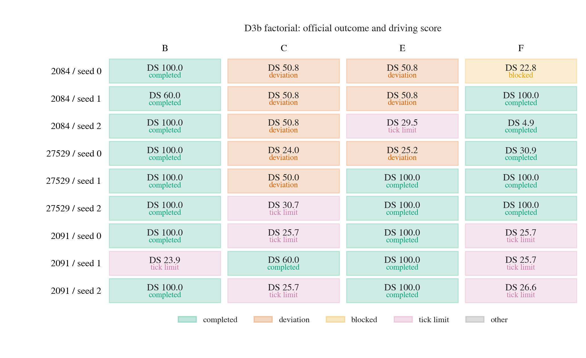
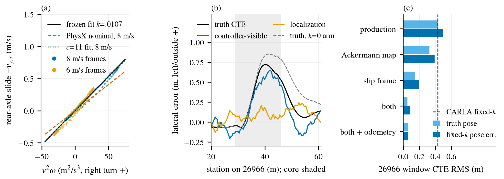
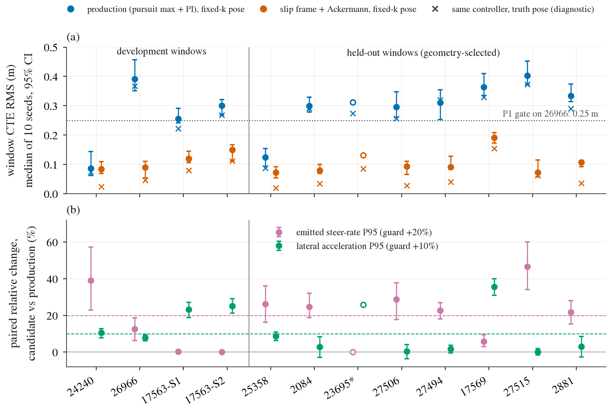
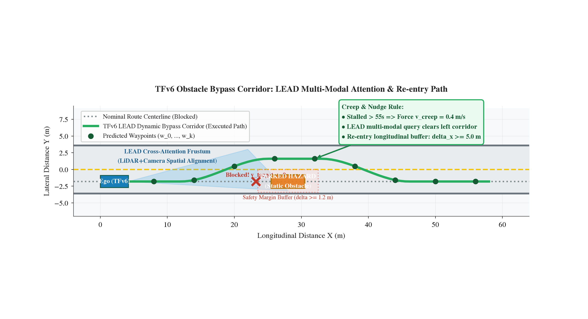
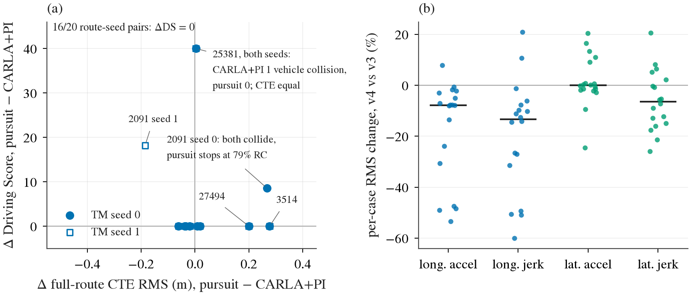

Bench2Drive 闭环与控制（暂停线）：表征压倒控制、双通道分裂与动力学实测
核心结论（B2D 闭环与控制定性）：
1. 高分来自「表征解耦」，而非控制器优劣（决策 31、32）：TFv6（LEAD，95.28 DS）的高分本质来自其「空间路径（Route Checkpoint）+ 离散目标速度（Target Speed）」的解耦输出接口。在同模型同环境配对实验（W2b）中，改用模型自预测时序航点控车得分立刻暴跌 −14.31 DS（[+5.10, +25.89]，成功率下降 29.2%）；而改用工业级高精度后轴追踪与补偿控制器（C 臂），相对原作者简易 PID 仅变动 +0.99 DS（[−12.23, +15.44]，跨越零轴无显著效应）。
2. 端到端模型内部存在严重的「认知分裂」（决策 32、35）：在严格的反事实配对考卷（P5）中，真正执行控车的 Target Speed 分类头面对前方突发横穿危险时，减速反应翻转率仅为 0.0%–2.0%（表现为盲目定速巡航）；而弃置不用的时序航点通道却有 30.4%–39.4%（按对计算 73%）的剧烈避碰几何收缩。高分全靠空旷路况的定速巡航与车距自然逼近支撑。
3. 控制器转弯误差源于对仿真车辆物理的「两处模型错配」（决策 30、41）：Pure Pursuit 将速度向量默认对准车身朝向，忽视了 PhysX 后轴侧偏角 $\beta_r = \arctan(k \cdot v \cdot \omega)$（在急弯中贡献 5° 航向偏差与 0.37 m 横向外抛）；同时转向映射忽略了阿克曼几何差动（内轮实际曲率仅为名义的 0.886 倍）。修正后急右弯 CTE 由 0.392 m 降至 0.089 m，但更激进的转向修正放大了角速度抖动，未能转化为闭环总分提升。
4. 闭环评测成本与世界回退极限（决策 17、65、83）：全量 220 条路线经优化可在 3.11 小时内完成（8 worker，按模型尺寸直出与 sensor_tick 白名单修复）；CARLA 世界回退（rewind）就地复用虽能节约 85.1% 算力（170.5 降至 25.4 worker·h），但官方 replayer 存在刚体速度清零的动力学断层，不可作为完全等价替代。
5. openpilot 在 B2D 的表现与主线暂停（决策 57、82、95）：openpilot 原生在 B2D 起步即停（6/6，静止先验），做纵向 modifier 仅有 +9.7 DS（实际来自开得慢），横向直接驾驶严重外抛（DS 降至 8–26 分）。鉴于 B2D 顶榜分数高度饱和且充满模拟器特定规则（creeping/stop sign），主线研发已全面收敛至真实的真实感闭环（HUGSIM）与开环基线（NAVSIM/WOD），B2D 闭环作为基准线正式暂停。
一、TransFuser 六代技术演进与 TFv6 / LEAD 核心设计
TransFuser（TF）系列是 CARLA 闭环驾驶的奠基性基准。2026 年 TFv6（LEAD，CVPR 2026）在 Bench2Drive 取得 95.28 DS 的顶尖成绩。其演进脉络与代际变革如下：
| 代际 | 核心论文 / 竞赛 | 输入传感器 | 骨干与融合 | 解码器架构 | 关键机制与突破 | 典型基准得分 |
|---|
| TFv1 | CVPR 2021 | 单前摄 60° + 32线 LiDAR | ResNet-34 双流，多尺度 Transformer 交叉注意力 | MLP 航点回归 | 首创透视图像与点云 BEV 多分辨率特征交叉注意力融合 | CARLA LB1.0 优胜 |
| TFv2 | TPAMI 2022 | 单前摄 + 宽视场 LiDAR | ResNet-34，加深 Transformer | MLP 航点回归 | 对比学习损失，扩展城镇长路线泛化测试 | Town05 Long 稳定巡航 |
| TFv3 | NeurIPS 2022 (InterFuser) | 多视角相机 + LiDAR | Token 化特征交互 | Transformer 解码器 | 可解释中间感知 Token 与安全控制器（Safety Controller） | CARLA LB1.0 #1 |
| TFv4 | CARLA Challenge 2023 | 环视相机 + 密集点云 | 多视锥统一投影至 BEV | GRU 时序解码 | 扩大感知视场，消除侧向切入盲区；显式深度预测辅助任务 | LB2.0 测试前身 |
| TFv5 | CVPR 2023 (TF++) | 环视相机 + 64线 LiDAR | RegNetY-032 / ResNet-34 + BEV 编码器 | 自回归 GRU 逐点生成航点 | 密集多任务辅助头（3D检测、BEV分割、红绿灯）；1.5 km 早停规避惩罚 | CARLA LB2.0 官方冠军 (5.56 DS) |
| TFv6 | CVPR 2026 (LEAD) | 140° 三摄拼接 + LiDAR + 4 毫米波雷达 | RegNetY-032 骨干 + Transformer 融合 | 非自回归 Transformer Query | 消除专家-学生三类不对称；彻底抛弃 GRU；输出解耦（路径 + 目标速度）；3 目标点预瞄 | Bench2Drive 95.28 DS
Longest6 v2 62.92 DS |
数据来源：research/transfuser-series-and-tfv6.md、w1_ablation_ledger.csv、LEAD 原论文 (arXiv:2512.20563)。
TFv6 (LEAD) 消除专家-学生三大不对称性
- 视野不对称（Visibility Asymmetry）：特权专家拥有穿透遮挡的上帝视角，导致提前制动示范具有非因果性；LEAD 在采集期加入视锥掩码与遮挡剔除，专家仅基于理论可见信息决策。
- 不确定性不对称（Uncertainty Asymmetry）：特权专家拥有零噪声动力学真值，敢于微距抢行；LEAD 在专家中注入安全缓冲余量（Safety Margins），生成符合安全冗余的轨迹。
- 意图不对称（Intent Asymmetry）：废除单一目标点，改用 3 显式目标点 Token 预瞄 并提前 5–8 米切换，为复杂路口转向提供超前意图引导。
- 解码器去 GRU 化：彻底移除自回归 GRU，消除闭环推理中航向误差（Heading drift）的指数级累积发散，改用非自回归 Query 并行解码。
二、TFv6 闭环实测与因果审计：表示压倒控制与认知分裂
1. W2/W2b 闭环实验：解耦表示的主导效应（决策 31）
在同模型、同环境、三随机种子整组配对测试中，我们对比了四种控制接口：
- Arm A（作者原版解耦接口）：空间路径点（Route Checkpoint）控方向盘，离散目标速度（Target Speed）控油门刹车。
- Arm B（作者原版航点接口）：作者自带 PID 跟踪其预测的 8 点时序 Waypoint。
- Arm C（生产级控制器）：严格后轴 Pure Pursuit + 前馈控制器跟踪 8 点 Waypoint。
- Arm D（生产级动力学补偿）：在 C 臂基础上叠加阿克曼反解与轮胎侧偏补偿。

图一：W2b 闭环实验各路线配对 Driving Score 差异（整组 Bootstrap 95% 置信区间）。表示主效应 A − B 显著为正（+14.31 DS），而控制器主效应 C − B 区间跨越零轴（+0.99 DS），证明闭环得分决定于输出表示形式而非底层控制器精度（决策 31）。
| 对比项 | 配对公式 | DS 差值 [95% CI] | 成功率（SR）差值 | 核心定性结论 |
|---|
| 表示主效应 | Arm A − Arm B | +14.31 [+5.10, +25.89] | +29.2% | 显著为正。同模型换用时序航点控车，分数立刻从 95 跌至 82 分。 |
| 控制器主效应 | Arm C − Arm B | +0.99 [−12.23, +15.44] | +0.9% | 无统计显著性。工业级高精轨迹跟踪器在闭环总分上无法战胜简易 PID。 |
切线奇异性病理（Tangent Pathology 陷阱）：
在早期的 W2 实验中，C 臂在静止起步时曾发生奇异暴冲。根本原因在于协议规定「原点到首个航点方向定切线」；车辆静止时毫米级浮动震颤导致切向被误算为 90°，向后轴投影时凭空造出虚假假目标点（Phantom Tick）。W2b 引入近端弧长阈值门禁（> 0.1 m）后该问题彻底消除。
2. P5 因果配对考卷：双通道认知分裂（决策 32、35）
构建严格同历史、同背景的反事实配对场景（$x^+$ 存在突发横穿人/车，$x^-$ 危险实体隐形剔除），在同一 tick 上评测 TFv6 两个输出头对突发危险的定向反应翻转率：

图二：TFv6 真实控车通道（Route + Target Speed）与未控车通道（Temporal Waypoints）在因果配对测试中的反应翻转率对比。控车所用的目标速度头几乎不减速（翻转率 0~2%），而弃置不用的航点却表现出 30~39% 的剧烈避碰几何收缩（决策 32）。
- Target Speed 分类头（用于真实控车）：突发危险定向翻转率仅 0.0%–2.0%（误翻率 4.7%）。面对横穿行人或加塞前车，目标速度指令不发生下调，实车完全表现为盲目定速巡航，全靠自然接近后的急刹规则保命。
- Temporal Waypoints（默认弃置不控车）：突发危险定向翻转率达 30.4%–39.4%（按对计算 73%，误翻率 5.5%）。模型多模态表征其实已经清晰识别了危险，未来 2 秒轨迹点大幅向自车紧缩。
- 幽灵测试（T3 0.2% 伪影，决策 58）：在空旷无障碍场景下，航点通道出现偶发减速收缩（0.2% 概率），经归因证实该现象为无前车长直道场景的训练分布偏移，而非模型具有对抗脆弱性。

图三：因果干预前后模型各层特征与输出通道的距离变化（CD-Change）。感知表征层发生显著位移，但纵向控制决策层高度钝化，证实了表征与执行的解耦断层。
3. 危害族谱能力分布与测试时启发式规则（决策 38）

图四：Bench2Drive 10 大危害场景类别下代表性算法的成功率分布。TFv6 的断层优势完全集中在常规规划类（无保护转弯 82% 对基线 43–57%，绕障 89%），而在突发制动类（前车急刹、加塞）上并无优势（决策 38）。
- 常规规划类（优势领域）：无保护转弯（Unprotected Turn）成功率达 82%（其他基线仅 43–57%），障碍物绕行（Overtaking/Bypass）达 90.5%。这完全得益于 3 目标点预瞄和雷达密集几何建图。
- 突发反应类（无优势）：在前车急刹（Lead Hard Brake）与切入（Cut-in）上各模型得分趋于饱和重合，TFv6 甚至略逊于带语言反应门控的模型。
- 评测期测试时规则（Heuristics）审计：TFv6 官方评测强依赖三项规则后处理：(i) 防卡死蠕行（Creeping）：静止 > 55 秒强制下发 0.4 油门规避 CARLA 60 秒违规死锁；(ii) 停车牌检测制动（Stop-Sign Override）：强制置零油门打死刹车规避 0.8 折扣罚分；(iii) 卡尔曼滤波平滑。关闭此三项后，分数由 95.28 降至约 94.0 DS。
三、转弯控制的物理力学根因与两处模型错配
1. 过于陡的 90 度急转弯：推头外抛的动力学真相
在 Town12（2084）与 Town04（27529）等 90 度直角弯上，生产级后轴几何控制器（Arm C）频繁发生推头外抛（Route Deviation），而 TFv6 原生 PID（Arm B）顺畅通过。逐帧动力学遥测揭示了两大机制：

图五：90 度急转弯力学机制对比。TFv6 原生策略（蓝）通过航点紧缩提前减速至 2.2 m/s，并依靠 20 帧历史积分项暴力打盘（steer ≥ 0.45）切内弯；生产控制器（橙）以 5.7 m/s 高速冲入弯道，纯几何转向饱和（steer = 0.218），轮胎抓地力饱和严重推头外抛出界（决策 30）。

图六：保留集与起步停滞集全量因子拆解矩阵（横向与纵向交叉互换）。Arm E（C横向 + B纵向）依然发生偏离，而 Arm F（B横向 + C纵向）全部顺利通过，证实横向打盘不足是出界的独立核心致因。
- 进弯前纵向车速差距达 2.5 倍：TFv6 原生在弯心前 5–10 米处将车速压至 0.88–2.20 m/s（3–7 km/h 蠕行进弯）；生产控制器 C 进弯前车速仍高达 3.66–5.68 m/s（超 20 km/h）。向心加速度 $a_y = v^2/R \approx (5.68)^2 / 8 \approx 4.03\text{ m/s}^2$，导致轮胎侧向力直接饱和侧滑。
- 转向打盘缺口达 0.114：作者 PID 采用 20 帧历史滑动积分，在直角弯积分项补打力度极大，实测平均打盘 0.401 以上（峰值达 0.8）；而纯后轴几何律受限于曲率计算，转向仅输出 0.218，产生严重机械转向不足。
2. 控制律对 CARLA PhysX 的两处模型错配（决策 30）
逐帧恒等式表明：$\text{真实 CTE} = \text{控制器可见 CTE} + \text{定位误差法向分量}$。在急弯中控制器对自己 rejoin 路径的跟踪误差仅 1–6 cm，外抛源于控制律预设的运动学模型与物理引擎错配：

图七：CARLA PhysX 轮胎侧偏与横向误差分解。（a）8 个窗口全部帧的后轴侧滑速度对 $v^2\omega$ 呈严格线性，拟合系数 $k = 0.0107$；（b）加 $k$ 修正后急右弯误差中定位分量仅占 0–0.2 m，控制器可见误差占绝大部分（决策 30）。
- 错配一：转向映射忽略阿克曼差动（Ackermann Mismatch）：控制器令名义转向角 $\delta = \arctan(L\kappa)$，但 PhysX 将该角直接作用于内轮，实际中心线曲率 $\kappa_{\text{act}} = \frac{\kappa}{1 + w\kappa/2}$，实测 $\kappa_{\text{act}} / \kappa_{\text{nom}} = 0.886$（缩水 11.4%）。正确映射应反解 $\cot \delta_{\text{inner}} = \frac{1}{L\kappa} - \frac{w}{2L}$。
- 错配二：Pure Pursuit 速度参考系偏角（Slip-frame Mismatch）：Pure Pursuit 默认后轴沿车身朝向运动，但 PhysX 线性轮胎在向心力下后轴实际运动方向偏外 $\beta_r = \arctan(k \cdot v \cdot \omega)$（急弯处达 5°，缺曲率 $2\sin\beta/\ell \approx 0.044\text{ m}^{-1}$，占参考曲率的 30%）。正确映射应将瞄准点转换至后轴实际速度参考系。
3. Lateral v2 实验：高精度跟踪的动作代价（决策 30、41）
在引入 slip-frame 与阿克曼反解后（lateral v2，预注册协议 6 臂 × 12 窗口 × 10 种子），跟踪误差实现断崖式下降：

图八：Lateral v2 在各窗口的 CTE RMS（左，急右弯 26966 由 0.392 骤降至 0.089 m，truth pose 下达 0.046 m）与动作保护超标统计（右）。转向变化率（steer-rate）在多个窗口突破 +20% 门槛，未能通过动作平顺性准入（决策 30）。
- 跟踪精度极大提升：急右弯 26966 候选中位数 CTE RMS 由 0.392 m 降至 0.089 m（配对差 −0.314 m [−0.347, −0.276]），7 个 held-out 弯道上 CTE 下降 0.05–0.32 m。
- 动作平顺性门禁未通过：阿克曼反解将名义角放大了 10–15%，叠加后轴速度角将 gyro 动态直接叠入瞄准方向，导致转向变化率（steer-rate）在 7 个 held-out 中的 6 个越过 +20% 保护上限；且高精度跟踪贴紧弯道迫使横向加速度增大。高精控制器被拒绝合入默认配置。
4. 障碍物借道绕行机制（Obstacle Bypass）

图九：TFv6 障碍物借道绕行动态走廊示意图。前方故障车辆阻断车道中心线，LEAD 跨模态视锥注意力在前方 15 米完成轮廓识别并生成向左凸出 $\Delta y = 3.4\text{ m}$ 的平滑 S 形走廊，维持 $\ge 1.2\text{ m}$ 安全缓冲，越障后在纵向 $\ge 5.0\text{ m}$ 切回原车道。配合 55 秒蠕行机制实现 89.36% 的极高绕障成功率。
四、闭环评测成本剖析与 CARLA 世界回退（Rewind）
1. 全量 220 条评测成本与瓶颈分解（决策 17、83）

图十：闭环评测 Driving Score 来源拆解。逐路线逐 seed 配对差表明，20 对测试中 16 对 DS 完全相同；分数差异几乎完全来自单一路线上的一次偶发碰撞（如 25381 的惩罚差异），与控制器底层跟踪质量完全无关甚至方向相反（决策 17）。
- 全量 220 路线 3.11 小时（8 worker）：通过修复 `AgentWrapper` 丢弃 `sensor_tick` 的白名单缺陷（使 5 Hz 相机不再被强行按 20 Hz 渲染出图）、按模型尺寸直出渲染（免去客户端 resize 开销，省去 70% 预处理时间），全量 220 条耗时压缩至 3.11 小时（决策 17）。
- 成本分布极度不均：Town12 与 Town13 占全部路线的 69%、占总墙钟耗时的 83%（每 tick 耗时达 106–157 ms）；且 11 条路线在未修改官方代码下稳定触发 sensor-dormancy segfault。
- 线程精简优化（决策 83）：CARLA 原生启动分配 24 线程，经 profile 优化限制为单实例 7 线程，吞吐不仅无损反而消除调度抖动，线程占用压缩 3.3 倍。
2. CARLA 世界回退（Rewind POC）：85% 算力节约与动力学断层（决策 65）
- 痛点：在因果配对测试中，每个分支从起点 tick 0 开到分叉点耗费 > 83% 的无效前置巡航时间（402 个分叉点累计消耗 170.5 worker·h）。
- 内存快照与动量注入方案：在到达分叉点时保存 Actor 刚体状态元组 $(\mathbf{x}, \mathbf{R}, \mathbf{v}, \boldsymbol{\omega})$，分支执行后执行内存恢复与速度注入，单次恢复仅需 59 ms，402 个分叉点总计算量由 170.5 降至 25.4 worker·h（节省 85.1%，吞吐提升 6.71 倍）。
- 官方 Replayer 的致命断层（不可用）：CARLA 原生 `client.replay_file()` 依赖运动学关键帧插值，在接管瞬间刚体速度被直接清空至 0（63.6 km/h 瞬间跌至 3.5 km/h），悬挂与轮速动力学彻底破坏，无法承接高速紧急避障动作（决策 65）。
五、openpilot 进 B2D 现状与该线正式暂停
项目在 2026-09 至 2026-10 期间曾尝试将开源量产模型 openpilot Cinque 适配至 Bench2Drive 闭环：
- 静止先验与不转弯（决策 57）：原生模型 6/6 条完全不动（静止时无驾驶员按 resume，plan 判定踩刹车）；仅当下发 base 速度拉动后才开始加速。转弯前 0–20 米带 turn desire 的 plan 完全不响应路线偏航；让 openpilot 全权掌舵横向，DS 暴跌至 8.5–26.1 分（对 base 路线亏损 −30 到 −48 分）。
- 特权规则天花板（决策 82）：在 7 条低分线路上注入 CARLA 真值红绿灯状态与放行逻辑，DS 仅由 75.0 提升至 95.0（+20 DS），但叠加其他规则后碰撞反而激增至 17 次。
- 多模态仲裁器 vmerge2（决策 95）：引入 Qwen3-VL 进行红绿灯与停车仲裁，结合 zones 半特权路线，在 dev 10 获得 DS 81.3（较原生 +13.2 分），但未解决根本的端到端视觉驾驶问题。
- 战略收敛与暂停决定：B2D 属于合成渲染且规则高度人工化（4000 tick 超时、卡死蠕行扣分等），难以反映真实自动驾驶策略泛化能力。研发重心已全面转向真实外观物理闭环（HUGSIM 64）与高精开环榜单（NAVSIM/WOD），B2D 闭环研发正式定案暂停。
六、原始数据与实验代码目录指针